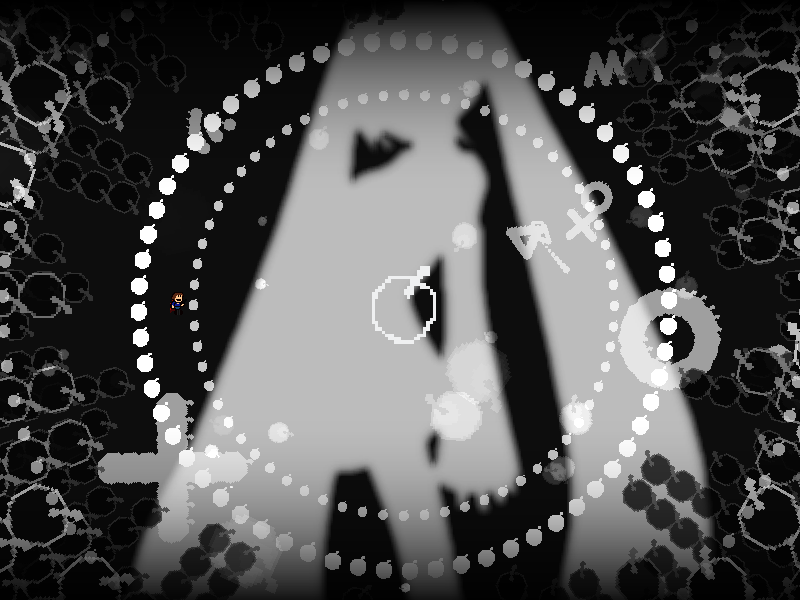

| creator | segment | label | jump |
|---|---|---|---|
| NN | 2:03.10~2:07.80 | R | infinite |
反復型の弾幕です。
画面中央を中心として周期的に生成される円形弾幕に関して、これらは生成から20step経過後（次の円形弾幕が生成され始める瞬間）に、その時点のプレイヤーの位置を基準とした速さを伴って発射されます。
発射速度については発射から20step経過後（次の次の円形弾幕が生成され始める瞬間）に発射時のプレイヤーの位置に重なるように決定され、また速度を失った時点で当たり判定はなくなります。
生成された円形弾幕の半径が、画面中央とプレイヤーとの距離に対して大きいか小さいかを瞬時に判断し、それぞれの場合に対応する適切な回避行動をとる必要があります。
1~10発目に生成される円形弾幕に関して、半径が大きいものと小さいものについてそれぞれ5回ずつ出現し、またどちらか一方が4回以上連続して出現することはありません。
なお、11発目（9-3の終わり際）に生成される円形弾幕については必ず半径が大きいものとなります。